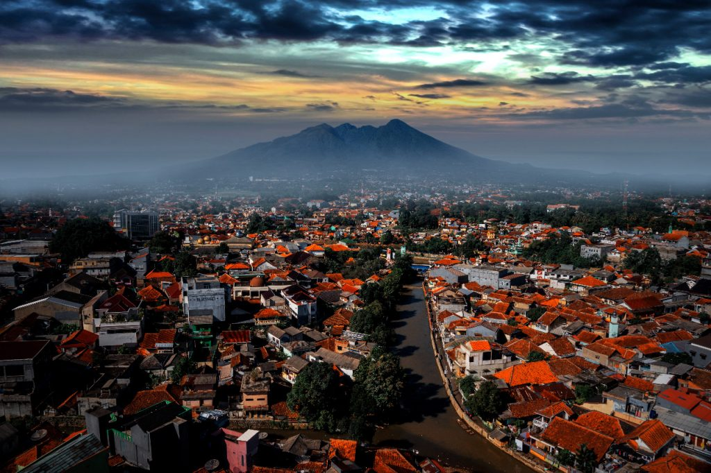
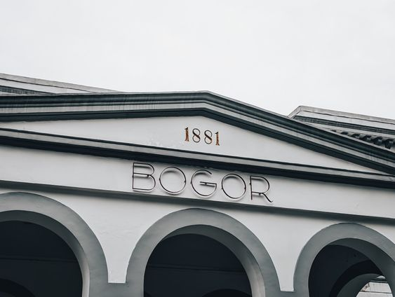
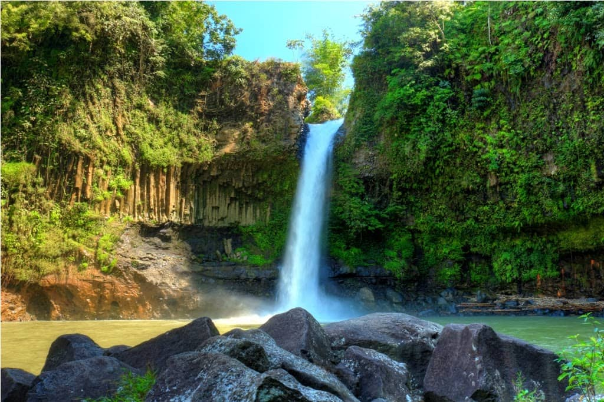
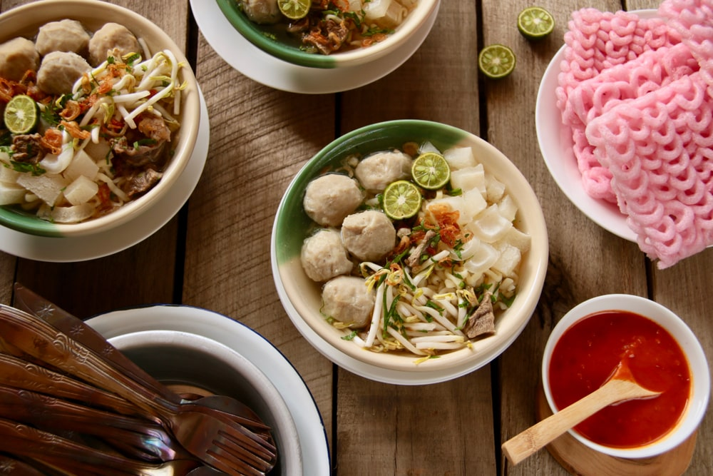
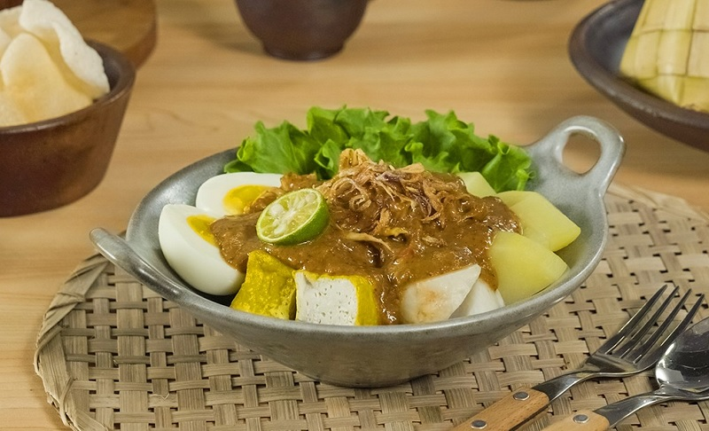

Sejarah

Kota Bogor memiliki sejarah yang kaya dan beragam, dimulai sebagai pusat Kerajaan Tarumanagara pada abad ke-5 Masehi di bawah pemerintahan Raja Purnawarman. Dengan letaknya yang strategis di pegunungan, kota ini menarik perhatian beberapa kerajaan lain karena kesuburannya dan keamanannya dari ancaman serangan.
Pada masa Kerajaan Sunda, Bogor dianggap sebagai ibukota Pajajaran, dengan Prabu Siliwangi yang menjadi tokoh penting pada masa itu. Di bawah kekuasaan Belanda, Bogor berkembang pesat. Istana Bogor dibangun pada tahun 1745 oleh Gubernur Jenderal Gustaaf Willem Baron van Imhoff, yang menjadikannya pusat pertanian dan tempat peristirahatan.
Peran Thomas Stamford Raffles, selama masa pendudukan Inggris, turut mengembangkan Bogor, dengan renovasi Istana Bogor dan pendirian Kebun Raya. Setelah kemerdekaan Indonesia, Bogor mengalami perubahan administratif, termasuk perubahan nama dan status pemerintahan, dari Kota Besar Bogor hingga Kotamadya Daerah Tingkat II Bogor. Pemekaran wilayah juga terjadi, mengubah batas-batas wilayah antara Kabupaten dan Kotamadya.
Sejarah Bogor mencerminkan perjalanan panjangnya dari masa kerajaan kuno hingga era modern, yang menandai perkembangan politik, sosial, dan budaya kota ini.
Geografis

kota Bogor terletak di bagin tengah- barat Pulau Jawa secara geografis 106o 48 Bujur Timur dan 6o 26 Lintang Selatan, dengan luas 11.850 Ha.
Secara administratif terdiri dari 6 wilayah kecamatan, 31 kelurahan dan 37 desa. Lokasi Kota Bogor sangat dekat dengan Ibukota Negara, merupakan potensi yang strategis bagi perkembangan dan pertumbuhan ekonomi dan jasa, pusat kegiatan nasional untuk industri, perdagangan, transportasi, komunikasi, dan pariwisata.
Kota Bogor mempunyai rata-rata ketinggian minimum 190 m dan maksimum 330 m dari permukaan laut.
Kondisi iklim di Kota Bogor suhu rata-rata tiap bulan 33,9o C dengan suhu terendah 18,8o C dengan suhu tertinggi 36,1o C. Kelembaban udara 90,8 %, Curah hujan rata-rata setiap bulan sekitar 352,5 - 576,1 mm dengan curah hujan terbesar pada bulan Agustus 2014.
Wisata

Ada beberapa tempat yang wajib kamu kunjungi selama berada di kota bogor yuk mari lihat sama-sama.
Kebun Raya Bogor

Kebun Raya Bogor merupakan salah satu ikon wisata yang memang layak kamu kunjungi pada saat berada di kota hujan. Selain karena luas, lingkungannya yang hijau asri menyimpan ribuan koleksi tanaman dan bunga.
Sedangkan areanya terbagi dalam beberapa area taman seperti taman Mexico, museum dll. Selain itu terdapat kita bisa mengunjungi beberapa museum seperti Museum Zoologi yang menyimpan berbagai jenis fosil hewan.
Baik hewan laut, mamalia, hingga bermacam jenis burung ada di sini. Dengan luas area setidaknya 87 hektar, sangat nyaman sebagai area rekreasi apalagi jika kita membawa keluarga.
Curug Cibaliung

Objek wisata alam di Bogor tidak pernah sepi dari pengunjung. Banyak aktivitas seru yang ditawarkan untuk liburan keluarga yang menyenangkan. Lokasinya yang tidak terlalu jauh dari Kota Jakarta membuatnya menjadi pilihan untuk menghabiskan waktu di akhir pekan. Dan Curug Cibaliung bisa menjadi salah satu pilihan menarik.
Curug Cibaliung menjadi salah satu curug bagus di Bogor yang masih jarang dikunjungi wisatawan karena lokasinya yang tersembunyi.
Tentunya curug Bogor Sentul ini sangat cocok buat Anda yang mencari ketenangan dan jaur dari hiruk pikuk perkotaan.
Curug Cibaliung yang berada di kawasan Sentul Bogor adalah air terjun yang adem plus udara yang sejuk. Objek wisata satu ini dapat menjadi andalan untuk healing dari penatnya aktivitas kerja.
Hidden paradise ini mulai populer di kalangan wisatawan. Airnya yang masih jernih di kelilingi oleh bebatuan besar dan jarang terjamah. Lokasinya tidak jauh dari taman budaya Sentul yang hits.
Sejarahnya sendiri berawal dari ditemukan sebuah aliran sungai di daerah Cibaliung. Sejak itulah warga setempat menyebutnya dengan nama Curug Cibaliung.
Makanan

Ada juga kuliner yang wajib kamu coba saat berada di kota Bogor penasaran? yuk kita lihat apa saja makanan khas bogor! yang pasti menggugah selera dan aseli khas bogor.
Doclang

Pernah dengar hidangan ini? Doclang merupakan makanan khas Bogor paling populer karena memadukan lontong yang dibungkus daun patat dengan tahu kuning goreng, kentang rebus, telur rebus lalu disiram kuah kacang ditambah kecap legendaris cap Zebra.
Salah satu tempat docang paling terkenal yaitu Doclang Pak Odik di Jalan Pasir Kuda (jajaran sekolah Insan Kamil), satu porsinya mulai dari Rp10.000,-
Toge goreng

Toge goreng memang sudah menjadi makanan khas Bogor paling populer dan legendaris. Hidangan ini terbuat dari toge rebus yang dicampur mie, tahu, dan kuah yang terbuat dari oncom merah, tauco, dan kecap manis.
Cara masak yang unik karena menggunakan kuali besar lalu hidangan dibungkus dengan daun pisang. Rasanya gurih manis lezat! apalagi jika dinikmati dengan kerupuk mie.
Tempat toge goreng legendaris paling terkenal di Kota Bogor bernama Toge Goreng Hj.Omah sejak tahun 1970.